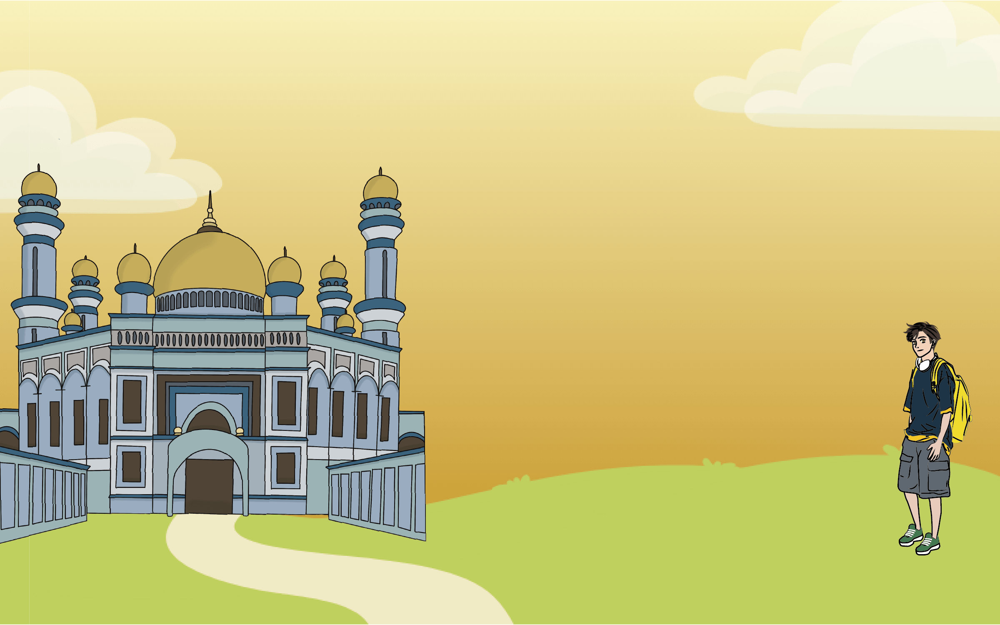

汶 萊Brunei


參考網站
這是我們的資料來源（可以自行複製下列網址查看喔）
習俗文化
飲食文化
汶萊飲食介紹：
https://ninetyroadtravel.com/brunei/food-5/
糯米捲介紹：
https://academic-accelerator.com/encyclopedia/zh/kelupis
竹筒雞介紹：
https://kknews.cc/zh-tw/news/ypn842j.html
特殊節日
汶萊國慶日：
http://www.hkislam.com/e19/e/action/ShowInfo.php?classid=17&id=8558
建築特色
建築介紹
汶萊建築特色：
https://dq.yam.com/post/13251
https://coolmedia.tw/archives/2644
蘇丹哈芝奧瑪阿里賽夫汀跨海大橋：
https://upload.wikimedia.org/wikipedia/commons/c/ce/Sultan_Haji_Omar_Ali_Saifuddien_Bridge.jpg
圖片來源
以下是圖片連結，皆是創用CC授權或組員親自拍攝
習俗文化
飲食文化
西米糕：
https://live.staticflickr.com/22/32240881_1fd5ef3ab6_c.jpg
糯米捲：
https://live.staticflickr.com/5100/5460518997_969e401ff9_b.jpg
竹筒雞：
https://live.staticflickr.com/84/214770044_c59b4d7411_z.jpg
敲門飯：
https://encrypted-tbn0.gstatic.com/images?q=tbn:ANd9GcRlUXrGdas0cBMt0f8zDi5UnOkVQdCrCKdAFYFc39PvqqUL7a94FsNlux_3Tss_IXCPCyw&usqp=CAU
炒牛肺：
https://reurl.cc/Qe3axO
建築特色
建築圖片
雙溪歌本大橋：
https://upload.wikimedia.org/wikipedia/commons/9/9c/Raja_Isteri_Pengiran_Anak_Hajah_Saleha_Bridge_2023_04.jpg
蘇丹哈芝奧瑪阿里賽夫汀跨海大橋：
https://upload.wikimedia.org/wikipedia/commons/e/e9/Sultan_Haji_Omar_Ali_Saifuddien_Bridge_%2825052020-2%29.jpg
奧瑪·阿里·賽義夫丁蘇丹清真寺：
https://live.staticflickr.com/65535/8619949791_1554e3da15_b.jpg
甘榜亞逸：
https://cdn2.picryl.com/photo/2009/03/26/village-on-the-water-brunei-15383937049-7bbe1c-1024.jpg
第十億桶原油紀念碑：
https://upload.wikimedia.org/wikipedia/commons/7/75/Billionth_Barrel_Monument.jpg
 參考網站
參考網站
 圖片來源
圖片來源